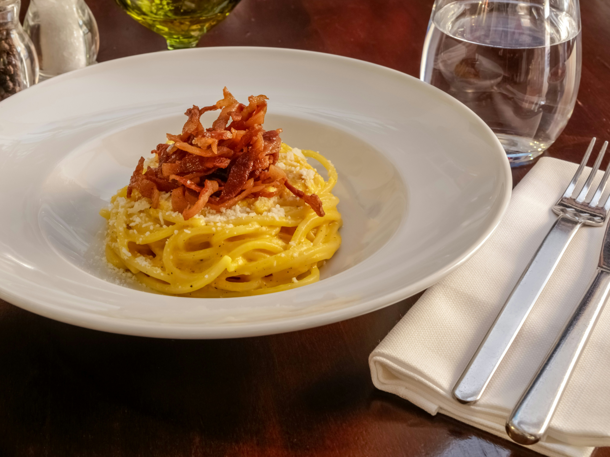

Carbonara
Carbonara
Risotto
Tiramisu
Desrciption
Pasta Carbonara is a classic Roman dish that captures the essence of simplicity and flavor.
This iconic Italian recipe features spaghetti enveloped in a luscious sauce made from eggs,
Pecorino Romano cheese, guanciale (cured pork jowl), and black pepper. The result is a creamy
and indulgent pasta dish that is both comforting and sophisticated. The key lies in achieving
the perfect balance between the creamy texture of the sauce and the savory bite of the guanciale.
Serve it piping hot, and you'll experience the true taste of Rome in every delicious bite.
Ingredients
- 400g spaghetti
- 150g guanciale, diced
- 3 large eggs
- 1 cup Pecorino Romano cheese, grated
Freshly ground black pepper
- Salt to taste
How to Prepare
- Cook the spaghetti in a large pot of salted boiling water according to package instructions until al dente.
Reserve about a cup of pasta water before draining.
- In a large skillet, cook the diced guanciale over medium heat until it becomes crispy and golden brown.
Remove from the heat and set aside.
- In a bowl, whisk together the eggs and grated Pecorino Romano cheese until well combined.
- Add the cooked and drained spaghetti to the skillet with the guanciale, tossing to combine.
- Quickly pour the egg and cheese mixture over the pasta, tossing continuously to coat the spaghetti
evenly. If the sauce is too thick, add some of the reserved pasta water gradually until desired creaminess is achieved.
- Season with freshly ground black pepper and salt if needed. Serve immediately, garnishing with additional
Pecorino Romano cheese if desired.
